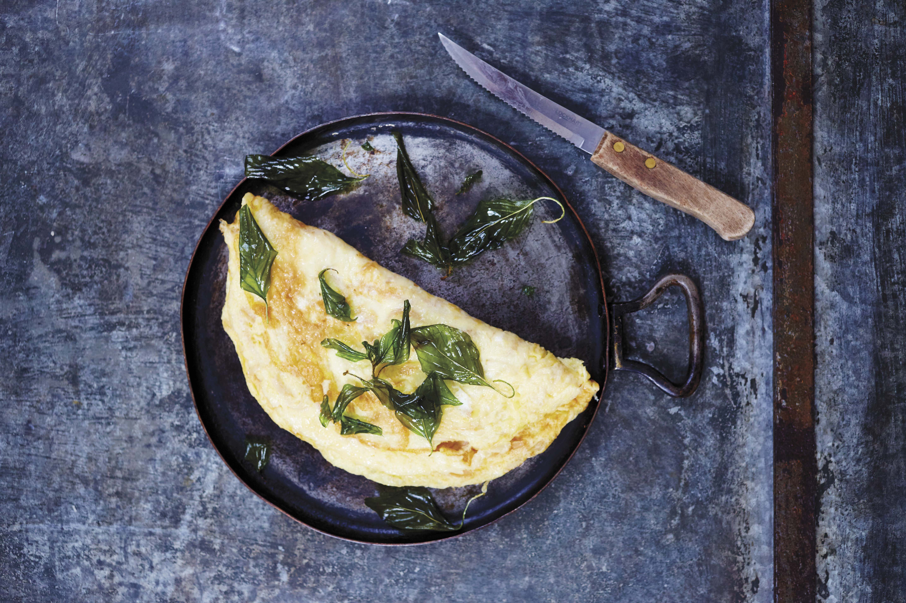

Preserved Radish Omelet with Crispy Basil

Preserved radish goes great with eggs as this dish demonstrates
Preserved radish can be salted or sweet. For this recipe you want the sweet ones.
Soft and chewy preserved radishes are intertwined into the omelet while deep-fried basil leaves cover the top to give a great blend of texture and flavor.
Ingredients
- vegetable oil, for deep frying
- 1 cup packed fresh holy basil or Thai sweet basil leaves
- 2/3 cup packed fine-matchstick-cut sweet preserved radishes
- 4 eggs
- 1 teaspoon fish sauce
- 2 tablespoons vegetable oil
- Thai Sriracha sauce
Steps
- Pour the oil to a depth of 1/2 inch into a wok or dutch oven and heat to 375 degrees fahrenheit.
- Line a sheet pan with paper towels and set near the stove.
- While the oil is heating, rinse the basil leaves, shake off and excess water, and then use a kitchen towel to pat them as dry as possible without bruising them.
- When the oil is hot, drop in the basil and step back right away.
- Stir the leaves around until the bubbling subsides and the leaves look somewhat translucent.
- Using a mesh skimmer, transfer the leaves to the prepared pan.
- Rinse the preserved radishes under cold running water for just a few seconds, then squeeze bone-dry.
- Crack the eggs into a bowl, add the fish sauce, and beat with a fork until frothy. Stir in the radishes.
- Heat 1 tablespoon of the lard in a 10-inch frying pan over medium-high heat.
- When the lard is hot, pour in the egg mixture, spreading it evenly over the bottom of the pan.
- Turn the heat to medium and cook until the bottom of the omelet is golden brown, 2 to 3 minutes.
- Using a wide spatula, lift up the omelet just enough to allow you to slip the remaining 1 tablespoon lard underneath it. Then instead of lowering the omelet back into the pan, flip it over and cook the other side, pressing down lightly along the way, until golden brown, 2 to 3 minutes longer.
- Slide the omelet onto a serving platter, top with the crispy basil leaves,and serve immediately with Sriracha and rice.